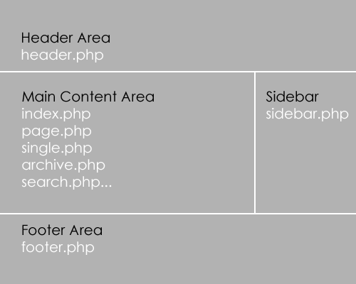

There are several ways to build a WordPress site. The right way for you will depend on your skill set and what your client needs.
It's best to stick to the WordPress theme repository.
Smashing Magazine also is a great resources for new themes.
Avoid doing random searches on Google.
Premium Commercial themes are inexpensive, but should only be used if you simply want to tweak a colour or two. You should also look into what type of support is available.
Commercial theme options:
A child theme inherits the functionality of the parent theme and allows you to modify, or add to it.
They allow you to code faster.
Any theme can be used, but these are good parent theme options:
Custom builds are the perfect choice if you want full control. This does not mean you are starting from scratch. It's best to use a starter theme and most developers have their favourite.
A WordPress theme is a collection of template files that work together to produce a website.
Some templates (e.g. the header and footer) are used on ALL pages, while others are used only under specific conditions.
A theme usually has the following:
|
|
|
|
For a visual guide, see this infographic.
Download a copy of the Twenty Twelve
and let's look at the template files
It's super easy and all you need to know is CSS.
How to use Firebug, helps too!
A child theme extends the parent theme and
MUST contain a style.css with the following
comment at the very top:
/*
Theme Name: The Name of your theme
Theme URI: http://www.yourdomainname.com/
Description: Your theme description goes here
Author: Your name
Author URI: http://www.yourdomainname.com
Template: The parent folder name
Version: 0.1
*/
@import url("../parent-folder-name/style.css");
No? Ready for more?